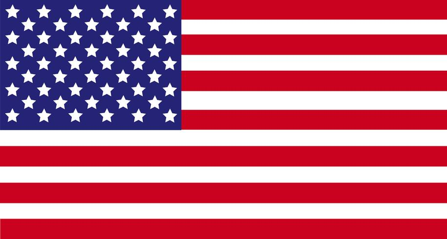

Historia
El regreso del tercer lugar de 2002
Turquía regresa a una Copa del Mundo después de más de dos décadas. Su última participación fue en Corea-Japón 2002, donde logró un histórico tercer lugar, considerada una de las mayores sorpresas en la historia de los Mundiales.
Ese equipo, liderado por figuras como Hakan Şükür y Hasan Şaş, derrotó a selecciones como Brasil y Corea del Sur en el camino hacia el podio. Ahora, una nueva generación de futbolistas turcos busca emular esa hazaña y devolver al país a la élite del fútbol mundial.
Estadísticas mundialistas
3.º
Mejor resultado
3
Participaciones
2002
Último Mundial
1954
Primer Mundial
Partidos en Grupo D
13 jun
Turquía vs Australia 
BC Place
Vancouver
Vancouver
19 jun
Turquía vs Paraguay 
Levi's Stadium
Santa Clara
Santa Clara
25 jun
Turquía vs EE.UU.

SoFi Stadium
Los Ángeles
Los Ángeles
Curiosidad
La sorpresa de 2002: La campaña de Turquía en Corea-Japón 2002 es considerada una de las sorpresas más importantes en la historia de los Mundiales. İlkay Ündar anotó el gol más rápido en la historia de la Copa del Mundo a los 11 segundos en el partido por el tercer lugar contra Corea del Sur.